Problem
Fly Fearless is a faith-based healing movement founded by Army veteran Lindsay Errico, helping women and service members break toxic cycles and reclaim emotional, spiritual, and relational wholeness through coaching, workshops, and digital content. Lindsay came to me to redesign her website as part of a complete business rebrand — repositioning the brand in the market, growing her speaking presence, and increasing conversions.
Users couldn’t tell what this website was about in under 10 seconds.
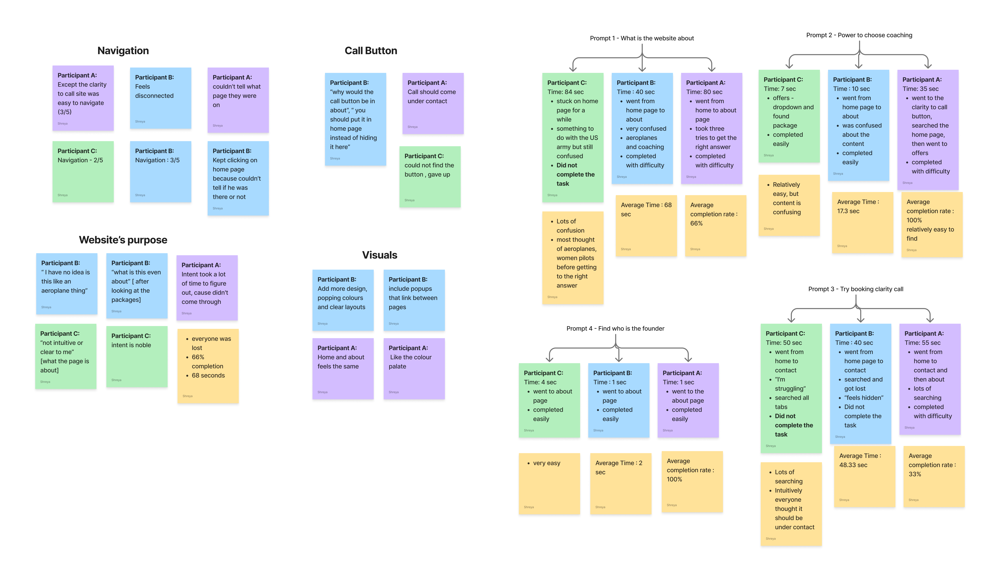
4/5
users failed to identify the brand’s purpose within 10 seconds
68s
was the average time to figure out what the website was about
33%
task completion rate for booking a clarity call
How might we redesign the Fly Fearless website so that users immediately understand the brand’s purpose, can navigate intuitively, and feel compelled to take action — all while giving Lindsay a site she can maintain and grow on her own?
Research
Applying Nielsen’s 10 Usability Heuristics
I audited the existing site against Nielsen’s framework to move beyond gut feeling and into structured, communicable problems.

Aesthetic and minimalist design
The header consumed a disproportionate amount of vertical space, and the homepage had more negative space than content, leaving users with nothing to anchor to on first load.

Recognition rather than recall
The About page opened with a dense, unbroken block of text with no visual hierarchy. Users had to read everything to find anything — a direct failure of scannable, recognizable structure.
.jpg)
Match between system and the real world
The word ‘Offers’ implied discounts rather than professional services. Navigation labels and CTA language didn’t match the mental models of the target audience - high-achieving women seeking coaching, not deals.
Competitive Analysis — Conway Mentorship
We identified Conway Mentorship as our closest competitor and the clearest example of what Lindsay wanted Fly Fearless to feel like — clean, credible, and conversion-focused.
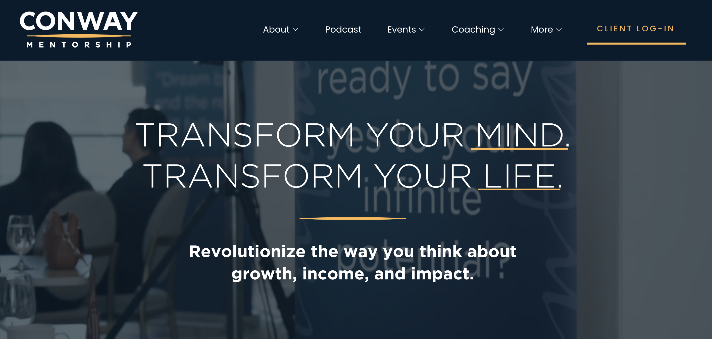
Strong visual hierarchy from the first scroll — bold headline, clear subheading, clean 5-tab nav. You know what this brand does and where to go within seconds.
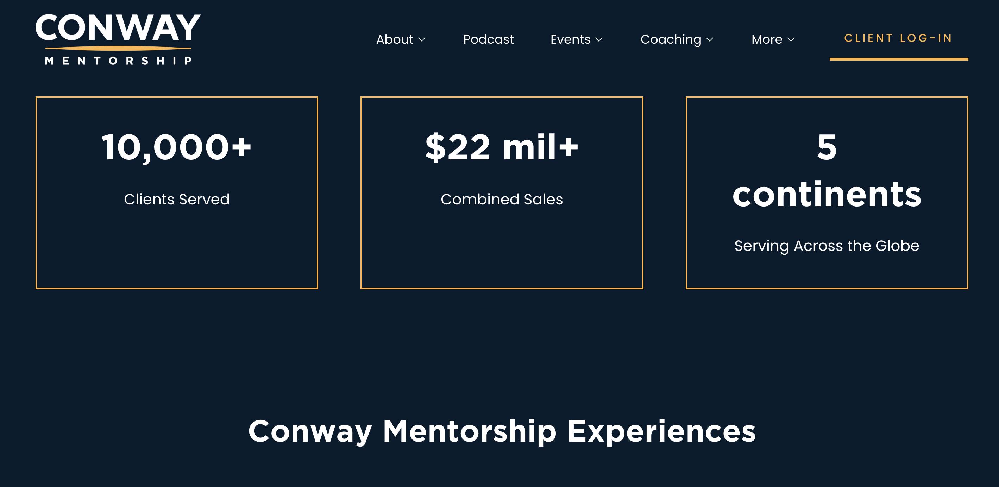
Skimmable and conversion-focused throughout. Social proof numbers establish credibility instantly, and content offerings are broken into clean equal-weight cards.
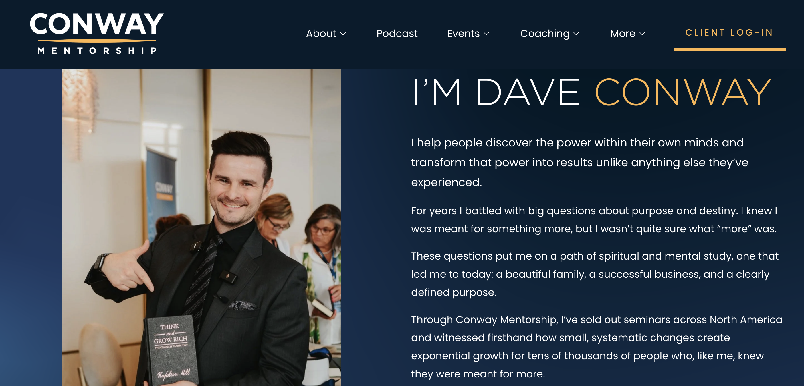
Founder story told concisely in a two-column layout — photo on the left, punchy and readable personal narrative on the right.
The goal was to bring Conway’s clarity and conversion logic to Fly Fearless’s existing emotional depth.
Design Principles
Hierarchy over decoration
Users should be able to scan any page and immediately understand what matters most — without having to read everything.
Earn trust before asking for action
Users need to understand who Lindsay is and what Fly Fearless offers before they’re asked to engage.
Familiar patterns, elevated execution
Users should never have to learn how to use this site. Navigation, CTAs, and page structure should feel instinctive.
Design Decisions
Information Architecture — restructuring content with business intent
The new sitemap wasn’t just about fixing navigation. Every structural decision actively supported Lindsay’s business goals. We went through multiple rounds of iteration before landing on the final architecture.
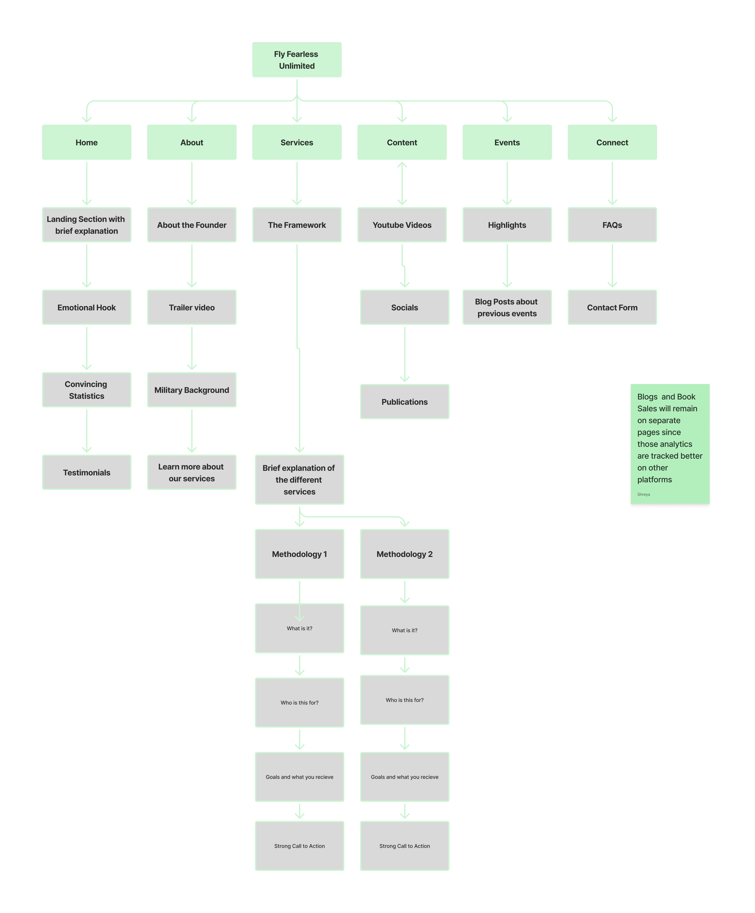
Sitemap 2 — Inclusive of the offerings page and social media
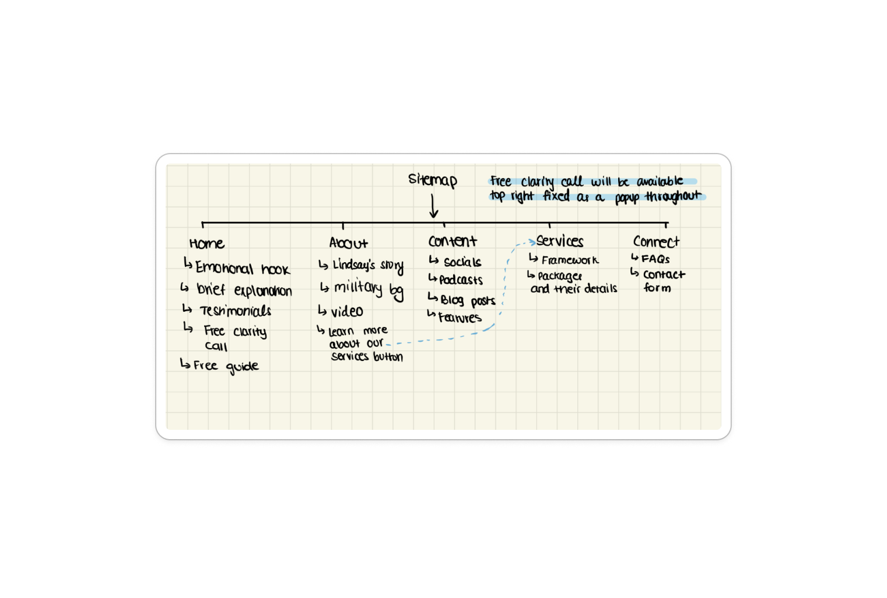
Sitemap 1 — Starting point from the existing site structure.
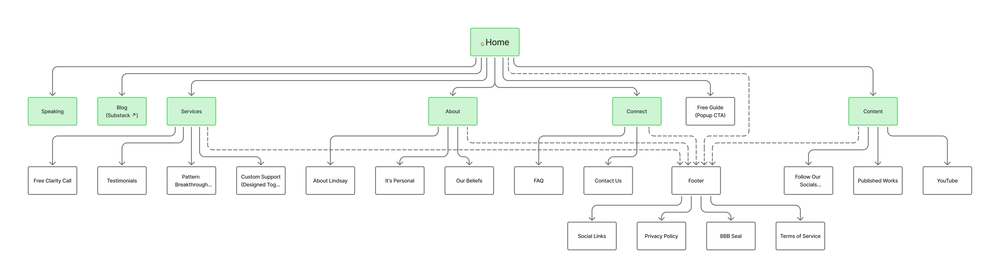
Sitemap final — More conversion-focused by creating a hub for all her content, including socials and impact evidence.
Testimonials with star ratings Credibility surfaced before any conversion ask.
Socials and content in one place Turns the site into a hub for Lindsay’s growing media presence.
Blog linked directly Active publishing signals a credible, living brand.
Published Works surfaced Low-friction entry point that also drives revenue.
Services named clearly Clear naming, pricing, and next steps — no ambiguity while creating visual frameworks that are easy to update
Speaking as a business hub Positions Lindsay as a public figure, not just a coach.
Brand Identity
With Lindsay’s rebrand underway, we built a visual system she could maintain herself. The tagline was simplified to ‘Heal. Rise. Fly.’ and the palette, typography, and components were aligned to the target audience: high-achieving women and service members who expect sophistication, not clutter.
The design took inspiration from Conway Mentorship’s visual simplicity — consistent icon weights, restrained color use, and a component library built for clarity. Font selection went through three rounds before landing on a pairing that balanced warmth with authority.

The site was built in Ivorey CRM — a tool I learned on the job — which meant designing with maintainability in mind. Every section was templated so Lindsay could update content without touching the design.
Ideation
From sketches to high fidelity — faster than planned
I began with hand-drawn sketches and low-fidelity wireframes to explore structural directions. When I presented these to Lindsay and the PROJXON team, the feedback was immediate — placeholders and bare structure made it impossible for non-design stakeholders to react meaningfully.
Their ask: get it into high fidelity so we can actually respond to it.
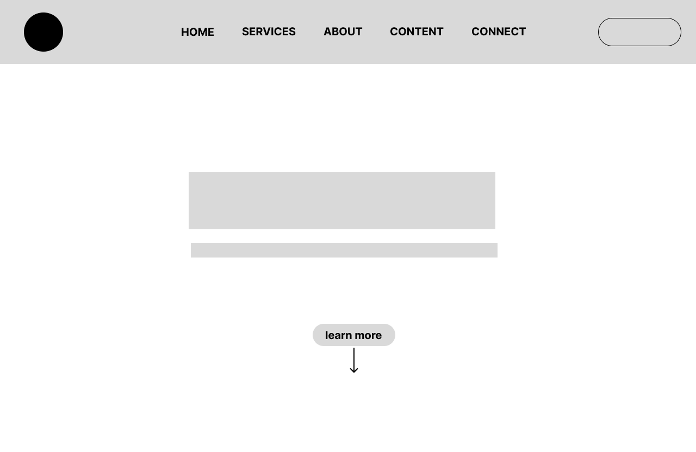
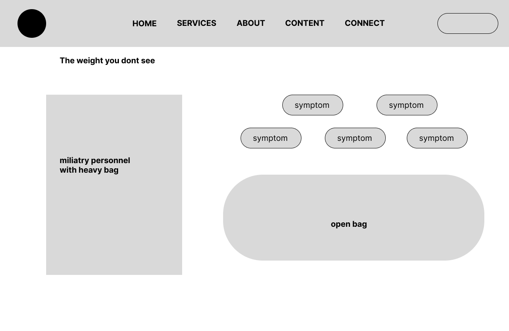
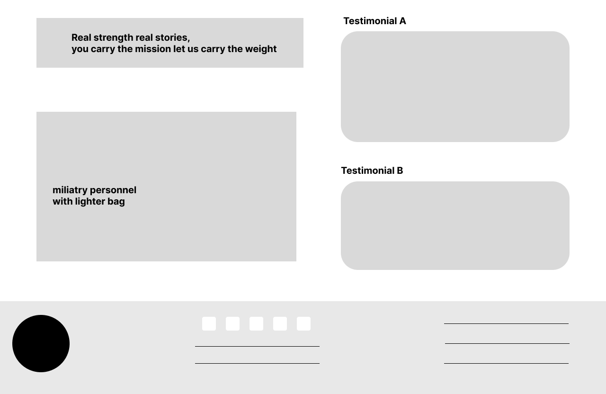
This compressed the iteration cycle but improved the quality of feedback dramatically. Stakeholders gave sharper, more actionable notes once they could see real typography, real content, and real imagery in place.
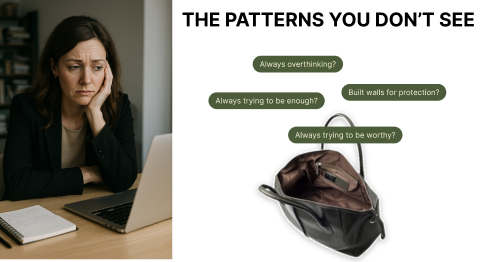

Iterations
Before feedback. After feedback.
After presenting to the PROJXON web development team, here’s what changed and why.
Before
Homepage felt flat — no texture or visual depth
After
Added texture through gradients and subtle patterns to create dimension and visual interest
Before
Hero image featured an upset person — off-putting for the target audience
After
Removed the section entirely — it felt unnecessary and misaligned with the brand’s tone of healing and strength
Before
About page led with beliefs before introducing Lindsay
After
Restructured page order: About Lindsay → Video → It’s Personal → Quote → We Believe → CTA
Before
Services used inconsistent stock images and packages were unevenly spaced
After
Returned to the design system — regularized imagery and corrected spacing across all packages
Impact
Key features of the redesigned site
The redesigned Fly Fearless site brings together clearer navigation and information architecture, a stronger content hierarchy, and a consistent brand identity that reflects Lindsay’s mission.
Homepage and navigation
- The homepage was rebuilt to communicate what Fly Fearless does within the first scroll — a bold headline, clear tagline, and sticky navigation with active states.
- The clarity call CTA moved from the nav to a persistent popup, keeping the primary conversion action visible without interrupting the browsing experience.
- Testimonials to add credibility
FAQ accordion
- A dedicated Connect page brings FAQ and contact together in one place.
- The accordion pattern reduces cognitive load
- Moved the contact form to this page as well because that’s where users tend to expect it
Speaking and content hub
- The Speaking page and Content tab work together to position her as a public figure
- Showcases her YouTube presence, published works, and social platforms — helps to build a brand.
Founder Testimonial
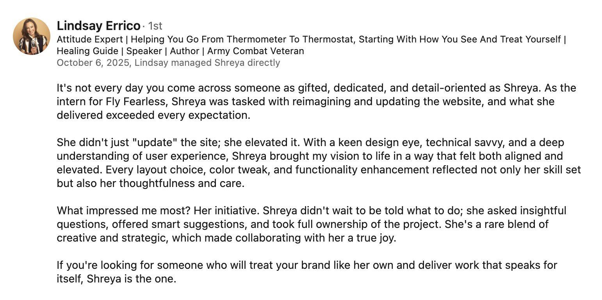
Key takeaways
Productivity and proactiveness matter
After a particular experience with an intern from PROJXON consulting, I learnt that taking initiative and going above and beyond to maintaining consistent progress ensures the best outcomes for the project.
Don’t design from limitation—design where you want to be
This was something the CEO at PROJXON said to me that really stuck - Rather than limiting yourself to current and technical restrictions, design toward the experience you ultimately want users to have and figure out a way to get there.
Iteration beats perfection
Focusing on continuous iteration allows me to improve designs based on feedback, rather than waiting for a perfect first draft.
More case studies